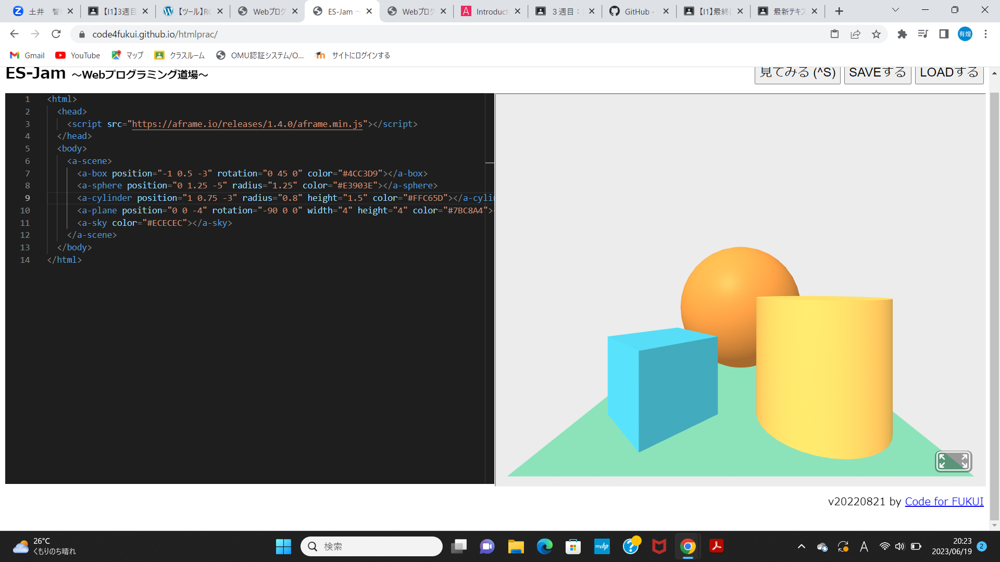
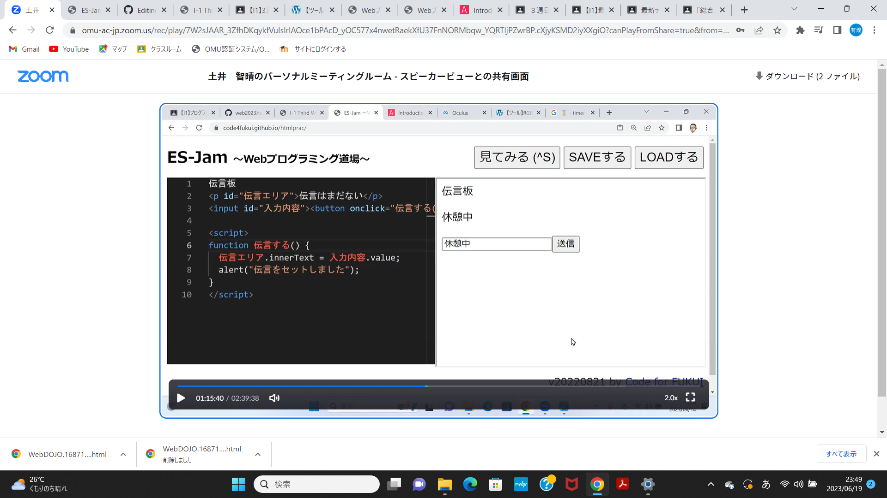

第3週目
3-1 JavaScript体験：VR空間を作る

自作した３次元空間
1.内容
JavaScriptを駆使して、独自のVR空間を作成する。
2.感想
色を16進数によるカラーコードで細分化し、三色から255種類の色を形成していることに驚き、座標指定や指数指定によって物体のの種類や位置、長さや太さを簡単に変更できることに感心し、指定の限界値に興味を持った。
3-2 JavaScript体験：伝言プログラムを作る

伝言板
1.内容
JavaScriptを用いて、伝言を残すことができるプログラムを作成する。
2.感想
文字の並びや形を少し変えるだけで、見かけや動作により得られる効果も一変していて、プログラミングの奥深さを感じた。
3-3 JavaScriptプログラムの３次元空間の体験
1.内容
JavaScriptプログラムを用いて、VR内での3次元空間を体験する。
2.感想
簡単な操作でモノの移動や場所の入れ替え、持ち上げなど多くのことができ、それらがどのようにプログラムされているのか関心を抱いた。